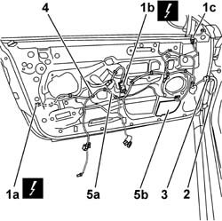

5505B10 FRONT DOOR WIRING - R R
- Path
- Procedures > 55 ELECTRICAL EQUIPMENT > 5505 INSTRUMENT/GUAGE ELECTRICAL WIRING > 5505B DOOR,BOOT AND BONNET WIRING. > 5505B10 FRONT DOOR WIRING - R R
- Kind
- repair procedure (removal / refitting; the operation number is the code)
- Applies to
- all engines; all production periods
- Interactive page
- https://sloeber94.github.io/elrnDB-aGt/en/#/125001589
Applies to: all engines; all production periods
 Removing
Removing
 Refitting
RefittingOp. 7005E91 PARTITION ON ONE FRONT DOOR (LH OR RH) - R R WITH DOOR PANEL REMOVED
1. Disconnect the electrical connections from the door lock (1a), the electric windows motor (1b) and the rear view mirror (1c).
Name | Connector | |
|---|---|---|
1a | Front driver's door lock geared motor | See N50 RIGHT FRONT DOOR LOCK LEFT |
Name | Connector | |
|---|---|---|
1a | Passenger side front door lock geared motor | See N51 RIGHT FRONT DOOR LOCK MOTOR |
Name | Connector | |
|---|---|---|
1b | Driver's front electric window motor | See N60 FRONT LEFT ELECTRIC WINDOW MOTOR |
Name | Connector | |
|---|---|---|
1b | Front passenger side electric window motor | See N61 FRONT RIGHT ELECTRIC WINDOW MOTOR |
Name | Connector | |
|---|---|---|
1c | Driver's external rear view mirror | See P60 LEFT DOOR MIRROR |
Name | Connector | |
|---|---|---|
1c | Exterior passenger side rear view mirror | See P61 RIGHT DOOR MIRROR |
2. Disconnect the door wiring electrical connection.
Name | Connector | |
|---|---|---|
2 | Rear coupling for front door driver's side | See D30 REAR COUPLING FOR /FRONT DOOR. DRIVER'S SIDE |
Name | Connector | |
|---|---|---|
2 | Front passenger door rear coupling | See D31 RIGHT FRONT DOOR REAR COUPLING/. |
3. Disconnect the connector from the door frame (bayonet fitting).
4. Release the door wiring retainers from the frame.
5. Remove the wiring (5a) from the door frame via the opening (5b).

Applies to: all engines; all production periods
Refitting
RemovingCheck that the wiring is undamaged and that the individual conductors are firmly attached to the connections.
Check that the connections are fitted with anti-slip devices (secondary lock).
If necessary, check the continuity.
Position the wiring in its housing in the door frame.
Secure the cable loom to the door frame using the retainers.
Connect the connector to the door frame (bayonet fitting).
Connect the electrical connections .
Check the operation of the electrical components connected.
Op. 7005E91 PARTITION ON ONE FRONT DOOR (LH OR RH) - R R WITH DOOR PANEL REMOVED